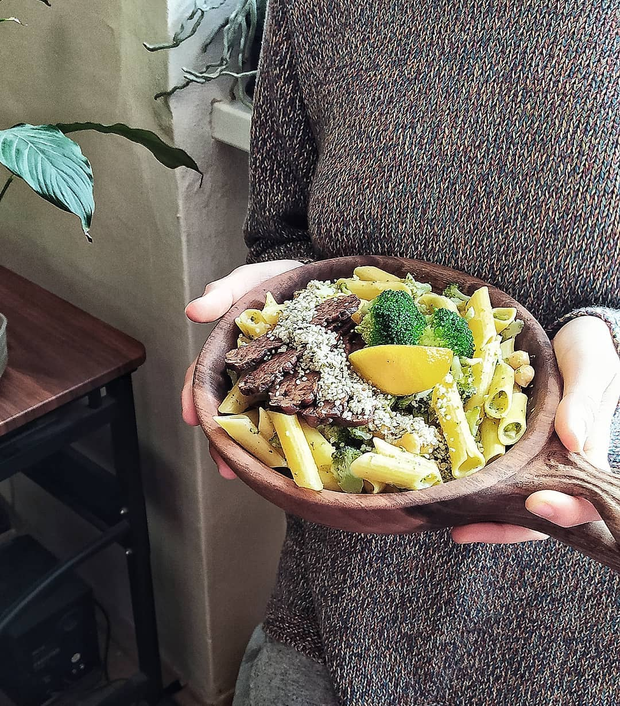

Brokolicová omáčka podľa @regina_matuskova — Normy Jedál
Krásný den přeji 🌻
Mám pro vás nový recept na výborné a zdravé jídlo a to na krémovou brokolicovou omáčku s kokosovým mlékem 😍
Brokolici mám moc ráda a tato omáčka je s ní fakt dokonalá. Navíc kokosové mléko vše krásně zjemní a jídlu dodá velmi zajímavou ale skvělou chuť 😋
Na přípravu je i opravdu jednoduchá a rychlá.
Moc doporučuji zkusit!! Dejte kdyžtak vědět, jak chutnalo 😉
-
Odkaz na blog najdete jako vždy v biu 🌼
-
#recipe #broccoli #pasta #creampasta #broccolipasta #brokolicovaomacka #těstoviny #healthyfood #quickrecipes #vegan #veganfood #veganrecepies #rychlérecepty #zdravérecepty